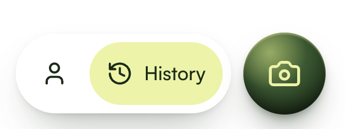

Each block stacks the reference render on top of a variant, drawn at the exact
coordinates measured off the reference PNG. The numbers are mean absolute error per channel
against that PNG, out of 255: one for the sphere's surface, one for every shadow pixel around
both shapes. Lower is closer.
V0 — what the app ships todaysphere 4.46 · shadows 0.63
reference

V0
History
V1 — circular gradient, first fitsphere 4.99 · shadows 0.22
reference
V1
History
V2 — V5 plus a hairline edge on both shapessphere 2.36 · shadows 0.26
reference
V2
History
V3 — the fitted ellipse cut down to 5 stopssphere 2.80 · shadows 0.22
reference
V3
History
V4 — real Liquid Glass, over a tinted backdropsphere 2.47 · shadows n/a